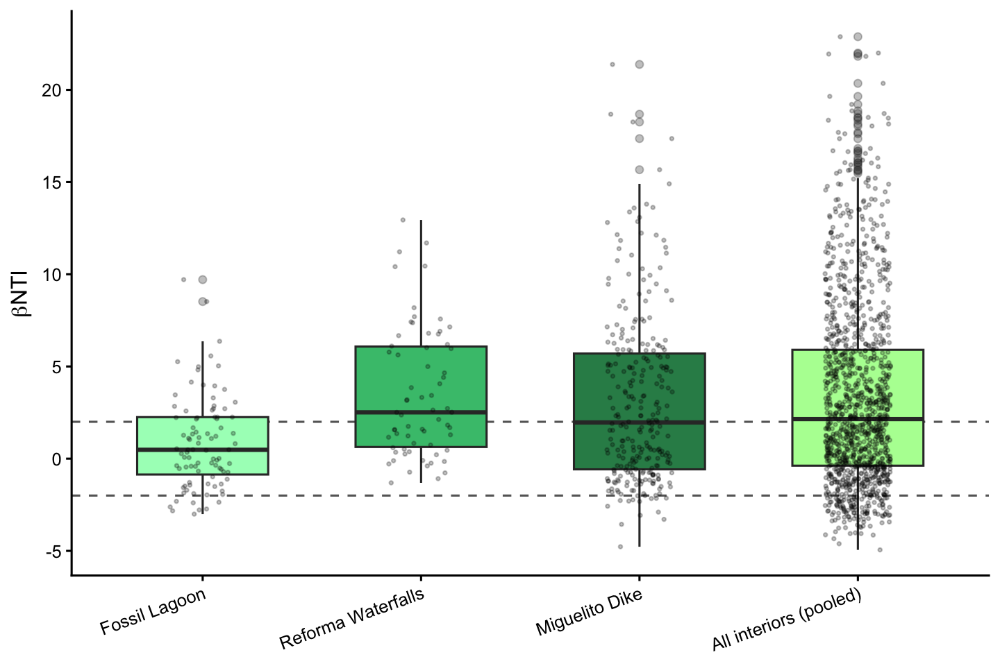
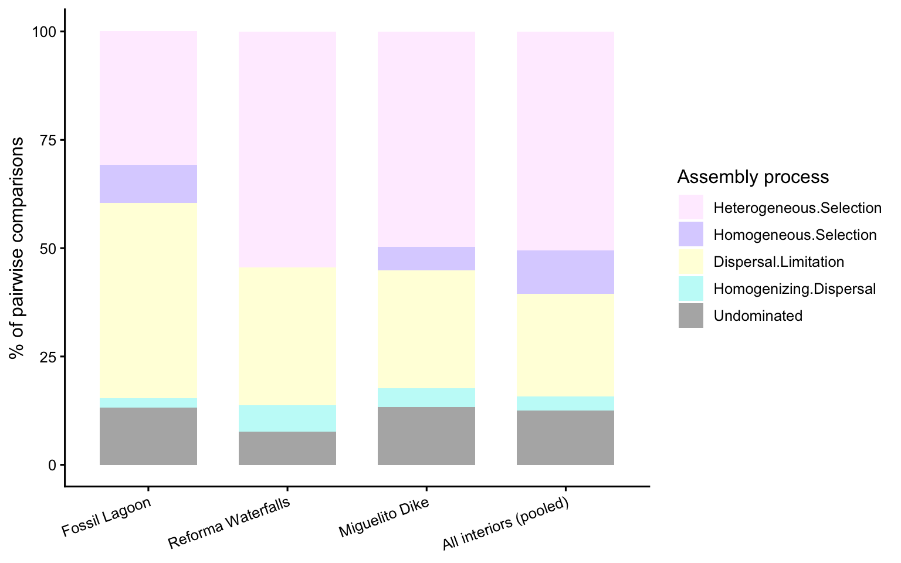

1) Community assembly processes (βNTI / RCbray)
Community assembly processes
Which ecological processes — selection, dispersal, or drift — govern the assembly of inland relict sediment communities?❓
We use the phylogenetic null-model framework of Stegen et al., implemented in iCAMP::qpen, to partition pairwise community turnover into deterministic (selection) and stochastic (dispersal, drift) processes. No ASVs were removed prior to the analysis. βNTI is restricted to the inland relict sites, where a single primer-consistent dataset and a robust phylogenetic tree make the analysis well supported.
Load libraries
The analysis (βNTI / RCbray with iCAMP::qpen)
Import data and prepare matrices
library(iCAMP); library(phyloseq); library(qiime2R)
set.seed(123)
nperm <- 999 # randomizations
ncores <- 4 # bajado por OOM (fork overcommit con muchos workers)
# Import (same pipeline as the rest of the site)
ps <- qza_to_phyloseq(
features = "data/ASV_table_filter_freq218_emc.qza",
tree = "data/rooted-tree-iqtree.qza",
taxonomy = "data/taxonomy.qza",
metadata = "data/metadata2.tsv"
)
# Rename systems as in 03.1.RelativeAbundances
metadata <- as(sample_data(ps), "data.frame") %>%
mutate(Location = case_when(
Location == "El Cacahuate" ~ "Fossil Lagoon",
Location == "La Piedad" ~ "Reforma Waterfalls",
Location == "Dique Miguelito" ~ "Miguelito Dike",
TRUE ~ Location))
sample_data(ps) <- sample_data(metadata)
# Community matrix (samples in rows) and phylogenetic distance — NO ASV filtering
comm <- as(otu_table(ps), "matrix")
if (taxa_are_rows(ps)) comm <- t(comm)
tree <- phy_tree(ps)
comunes <- intersect(colnames(comm), tree$tip.label)
comm <- comm[, comunes, drop = FALSE]
tree <- ape::drop.tip(tree, setdiff(tree$tip.label, comunes))
pd <- cophenetic(tree)[colnames(comm), colnames(comm)]Run qpen per site and pooled
meta_df <- data.frame(sample_data(ps))
interiores <- c("Fossil Lagoon", "Reforma Waterfalls", "Miguelito Dike")
run_qpen <- function(samples, etiqueta) {
cm <- comm[rownames(comm) %in% samples, , drop = FALSE]
cm <- cm[, colSums(cm) > 0, drop = FALSE]
pdi <- pd[colnames(cm), colnames(cm)]
res <- qpen(comm = cm, pd = pdi, rand = nperm,
nworker = ncores, sig.bNTI = 2, sig.rc = 0.95)
res$result$grupo <- etiqueta
res$result
}
resultados <- lapply(interiores, function(s)
run_qpen(rownames(meta_df)[meta_df$Location == s], s))
resultados[["pooled"]] <- run_qpen(
rownames(meta_df)[meta_df$Location %in% interiores], "All interiors (pooled)")
todos <- bind_rows(resultados)
dir.create("06.null-models-results", showWarnings = FALSE)
write_csv(todos, "06.null-models-results/qpen_pairwise_all.csv")
resumen <- todos %>%
count(grupo, process) %>%
group_by(grupo) %>%
mutate(porcentaje = round(100 * n / sum(n), 1)) %>% ungroup()
write_csv(resumen, "06.null-models-results/qpen_process_summary.csv")Significance of process differences between sites (Fisher’s exact test)
# βNTI values are non-independent pairwise comparisons, so differences in
# process composition between sites are tested with Fisher's exact test
# (Benjamini-Hochberg correction), NOT linear mixed models.
sitios <- c("Fossil Lagoon", "Reforma Waterfalls", "Miguelito Dike")
dat <- todos %>% filter(grupo %in% sitios)
tabla <- dat %>%
count(grupo, process) %>%
pivot_wider(names_from = process, values_from = n, values_fill = 0) %>%
column_to_rownames("grupo") %>% as.matrix()
pares <- combn(sitios, 2, simplify = FALSE)
posthoc <- purrr::map_dfr(pares, function(pr) {
sub <- tabla[pr, ]; sub <- sub[, colSums(sub) > 0, drop = FALSE]
p <- fisher.test(sub, simulate.p.value = TRUE, B = 1e5)$p.value
tibble(sitio_1 = pr[1], sitio_2 = pr[2], p_raw = p)
})
posthoc$p_adj <- p.adjust(posthoc$p_raw, method = "BH")
write_csv(posthoc, "06.null-models-results/posthoc_process_differences.csv")
resumen_bnti <- dat %>%
group_by(grupo) %>%
summarise(n_pares = n(),
bNTI_medio = round(mean(bNTI), 2),
bNTI_sd = round(sd(bNTI), 2),
pct_seleccion = round(100*mean(abs(bNTI) > 2), 1), .groups = "drop")
write_csv(resumen_bnti, "06.null-models-results/bNTI_summary_by_site.csv")Results and figures
Project colour palette
# Localities — consistent with the rest of the site (loc_colors)
loc_colors <- c("Fossil Lagoon" = "#A7fcc1",
"Reforma Waterfalls" = "#44C17B",
"Miguelito Dike" = "#2E8B57",
"All interiors (pooled)" = "#b2ffa1")
# Assembly processes — greens/teals coherent with the site
process_colors <- c("Heterogeneous.Selection" = "#ffeeff",
"Homogeneous.Selection" = "#dcd3ff",
"Dispersal.Limitation" = "#FFFFDD",
"Homogenizing.Dispersal" = "#c4faf8",
"Undominated" = "gray70")
process_order <- c("Heterogeneous.Selection","Homogeneous.Selection",
"Dispersal.Limitation","Homogenizing.Dispersal","Undominated")
group_order <- c("Fossil Lagoon","Reforma Waterfalls",
"Miguelito Dike","All interiors (pooled)")Load saved results
todos <- read_csv("06.null-models-results/qpen_pairwise_all.csv",
show_col_types = FALSE)
resumen <- read_csv("06.null-models-results/qpen_process_summary.csv",
show_col_types = FALSE)
todos$grupo <- factor(todos$grupo, levels = group_order)
resumen$grupo <- factor(resumen$grupo, levels = group_order)
resumen$process <- factor(resumen$process, levels = process_order)Fig 6A — βNTI distribution by group
ggplot(todos, aes(grupo, bNTI, fill = grupo)) +
geom_hline(yintercept = c(-2, 2), linetype = "dashed", colour = "grey40") +
geom_boxplot(width = 0.6, outlier.alpha = 0.3) +
geom_jitter(width = 0.15, alpha = 0.25, size = 0.6) +
scale_fill_manual(values = loc_colors) +
labs(x = NULL, y = expression(beta*"NTI")) +
theme_classic(base_size = 12) +
theme(legend.position = "none",
axis.text.x = element_text(angle = 20, hjust = 1))
|βNTI| > 2 indicates selection; βNTI < −2 homogeneous selection, βNTI > 2 heterogeneous selection. The dashed lines mark the ±2 thresholds.
Fig 6B — Assembly process composition
ggplot(resumen, aes(grupo, porcentaje, fill = process)) +
geom_col(width = 0.7) +
scale_fill_manual(values = process_colors, name = "Assembly process") +
labs(x = NULL, y = "% of pairwise comparisons") +
theme_classic(base_size = 12) +
theme(axis.text.x = element_text(angle = 20, hjust = 1))
Summary tables
| grupo | n_pares | bNTI_medio | bNTI_sd | pct_seleccion |
|---|---|---|---|---|
| Fossil Lagoon | 91 | 0.85 | 2.51 | 39.6 |
| Miguelito Dike | 276 | 3.12 | 4.62 | 55.1 |
| Reforma Waterfalls | 66 | 3.49 | 3.49 | 54.5 |
knitr::kable(posthoc, caption = "Fisher's exact test between sites (BH-adjusted).")| sitio_1 | sitio_2 | p_raw | p_adj |
|---|---|---|---|
| Fossil Lagoon | Reforma Waterfalls | 0.0021400 | 0.0064199 |
| Fossil Lagoon | Miguelito Dike | 0.0060899 | 0.0091349 |
| Reforma Waterfalls | Miguelito Dike | 0.1619684 | 0.1619684 |
Key result. Across all inland samples, deterministic selection dominated assembly (60.4% of comparisons; heterogeneous selection 50.4%), reproducibly across the three sites. Fossil Lagoon, the most isolated site, showed the largest contribution of dispersal limitation (mean βNTI 0.85), whereas the river sites were selection-dominated (mean βNTI 3.12 and 3.49). Fossil Lagoon differed from both river sites (Fisher, BH-adjusted p = 0.006 and 0.009), while the two river sites did not differ (p = 0.16).